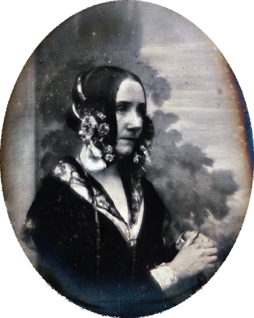

A Feiticeira dos números
A filha do famoso poeta Lord Byron, Augusta Ada Byron, condessa de Lovelace
- mais conhecida como "Ada Lovelace" - mostrou seu talento para a matemática desde tenra idade.
Ela traduziu um artigo sobre uma invenção de Charles Babbage e acrescentou seus próprios
comentários.
Por ter introduzido muitos conceitos de computador, Lovelace é considerado o primeiro programador de
computador.
Ela morreu em 27 de novembro de 1852.
"Nunca estou realmente satisfeita quanto a entender alguma coisa; porque, até onde entendo, a minha compreensão só pode ser uma fração infinitesimal de tudo o que eu quero compreender."
História
Ada, nascida como Augusta Ada Byron em 10 de dezembro de 1815, era o único filho legítimo do famoso poeta Lord George Gordon Byron . O casamento de Lord Byron com a mãe de Ada, Lady Anne Isabella Milbanke Byron, não foi feliz. Lady Byron se separou do marido apenas algumas semanas após o nascimento da filha. Alguns meses depois, Lord Byron deixou a Inglaterra e Ada nunca mais viu o pai. Ele morreu na Grécia quando Ada tinha 8 anos.
Ada teve uma educação incomum para uma garota aristocrática em meados do século XIX. Por insistência de sua mãe, os tutores ensinaram matemática e ciências. Esses assuntos desafiadores não eram comuns para as mulheres da época, mas sua mãe acreditava que participar de estudos rigorosos impediria Ada de desenvolver o temperamento temperamental e imprevisível de seu pai. Ada também foi forçada a ficar parada por longos períodos porque sua mãe acreditava que isso a ajudaria a desenvolver o autocontrole.
Por volta dos 17 anos, Ada conheceu Charles Babbage, matemático e inventor. Os dois se tornaram amigos, e o muito mais velho Babbage serviu como mentor para Ada. Por meio de Babbage, Ada começou a estudar matemática avançada com o professor Augustus de Morgan, da Universidade de Londres. Ada ficou fascinada com as idéias de Babbage. Conhecido como o pai do computador, ele inventou o mecanismo da diferença, destinado a realizar cálculos matemáticos. Ada teve a chance de olhar para a máquina antes de terminar e foi cativada por ela. Babbage também criou planos para outro dispositivo conhecido como mecanismo analítico, projetado para lidar com cálculos mais complexos. Mais tarde, Ada foi convidado a traduzir um artigo sobre o mecanismo analítico de Babbage que havia sido escrito pelo engenheiro italiano Luigi Federico Menabrea para um periódico suíço. Ela não apenas traduziu o texto original em francês para o inglês, mas também acrescentou seus próprios pensamentos e idéias na máquina. Suas anotações acabaram sendo três vezes mais longas que o artigo original. Seu trabalho foi publicado em 1843, em uma revista científica inglesa. Ada usou apenas as iniciais "AAL", de Augusta Ada Lovelace, na publicação.
